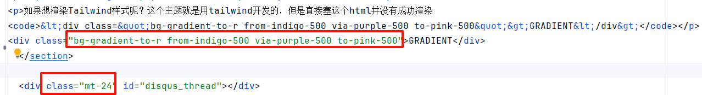

Tailwind测试
之前就很好奇，md渲染出来的页面里可以放html、自定义样式吗？查了下在config加配置就可以了：
# needed to render raw HTML (e.g. <sub>, <sup>, <kbd>, <mark>)
[markup]
[markup.goldmark]
[markup.goldmark.renderer]
unsafe = true
渲染原生样式：<p style="line-height:50px;border:dashed 3px #0e0;">This is a test.</p>
This is a test.
如果想渲染tailwind样式呢？博客现在的Paper主题就是用tailwind开发的，但是下方的html放进去并没有成功渲染。
<div class="bg-gradient-to-r from-indigo-500 via-purple-500 to-pink-500">GRADIENT</div>
看了下静态页面，这么塞进去是没问题的，其他tw样式渲染成功了，但线性渐变就是有问题 
给themes/paper/layouts/partials/head.html引入了tailwind脚本之后就显示正常了<script src="https://cdn.tailwindcss.com"></script>，看来是缺少脚本引入，之前这几个属性都是没有的。

不过整个引入之后呢，主题有些样式就出问题了，比如文章标题h1的字号变得很小，段落分隔没了，svg显示不出来，深浅主题的文字颜色不对……另外又发现修改theme的样式有时候不生效，mt-12可以，mt-4不认识，原来是main.css精简过了，属性不全，可以看到package.json里这条"dev:css": "npx @tailwindcss/cli -i ./assets/app.css -o ./assets/main.css --watch"就是干这个的。
重新执行的话，只会针对theme里的改动做调整，所以调整theme可以，文章里的tw样式还是会有问题。不处理了，以免精力都用在折腾上，主次颠倒了。写原生css也没啥坏处，哈哈。